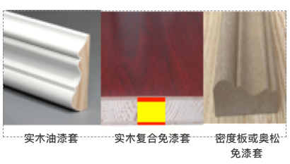
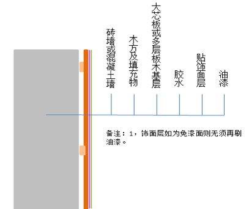

什么是垭口？无门扇的洞口包边？
窗套可以用木窗套吗？内部窗可以，外窗不宜。老祖宗有句话形容木材性能，“干千年，湿千年，半干半湿就三年”，外窗难免风吹受潮日晒，很快就会变形褪色腐朽，好看不好用。外窗还是采用大理石等耐久性比较好的材料。
木门窗套材质有哪些？
实木、实木复合、密度板及奥松板。

实木：看断面木纹，为一整块木头加工而成，绝无拼接。某猫上就有混淆概念，卖的是复合的却说是实木，实木就是一整块，拼的就是指接或多层。油漆、烤漆或免漆面等只是表面处理或贴皮，缺点是就贵。
实木复合：有多种，简单说不止一层且能看出分层，图中为大芯板（细木工板）+三聚氰胺饰面，层数越多胶水越多，甲醛含量越高，环保越差。 密度板或奥松板，简单看就是胶水粘结木颗粒，胶水多多，环保差，泡水就坏，最差。优点就是便宜。
现场做木门窗套还是采购成品门窗套？
现场制作木门窗套与采购成品门窗套价格上差异不大，现场制做的品质取决于工人的技术水平，差异性比较随机，而工厂定制则品质比较恒定，而且考虑到与定制木门的协调性，建议采用成品定制。

现场制作木门窗套示意图